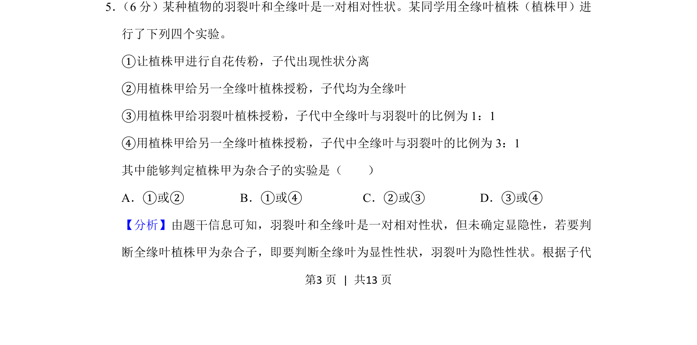
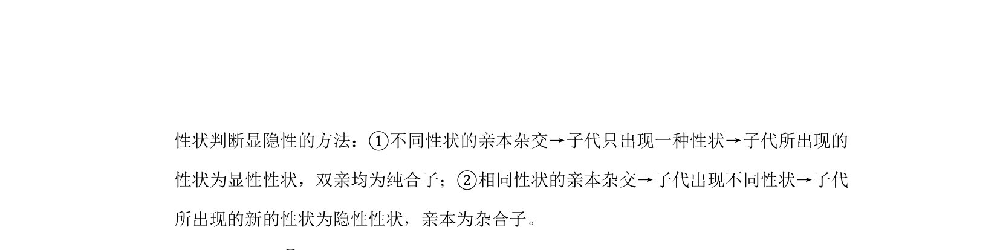
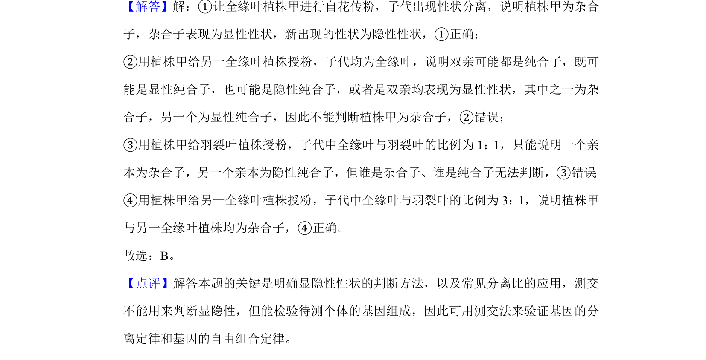

考点：杂交实验 性状分离 自交 测交 杂合子


本实验通过分析杂交结果判断植株的基因型，需理解性状显隐性与杂合子判定依据

📄 原 PDF 第 3 页：
素材/真题/吉林/2008-2024·（吉林）生物高考真题/2019年高考生物试卷（新课标Ⅱ）（解析卷）.pdf
5． （6分）某种植物的羽裂叶和全缘叶是一对相对性状。某同学用全缘叶植株（植株甲）进 行了下列四个实验。 ①让植株甲进行自花传粉，子代出现性状分离 ②用植株甲给另一全缘叶植株授粉，子代均为全缘叶 ③用植株甲给羽裂叶植株授粉，子代中全缘叶与羽裂叶的比例为1：1 ④用植株甲给另一全缘叶植株授粉，子代中全缘叶与羽裂叶的比例为3：1 其中能够判定植株甲为杂合子的实验是（ ） A．①或②B．①或④C．②或③D．③或④
【分析】由题干信息可知，羽裂叶和全缘叶是一对相对性状，但未确定显隐性，若要判 断全缘叶植株甲为杂合子，即要判断全缘叶为显性性状，羽裂叶为隐性性状。根据子代